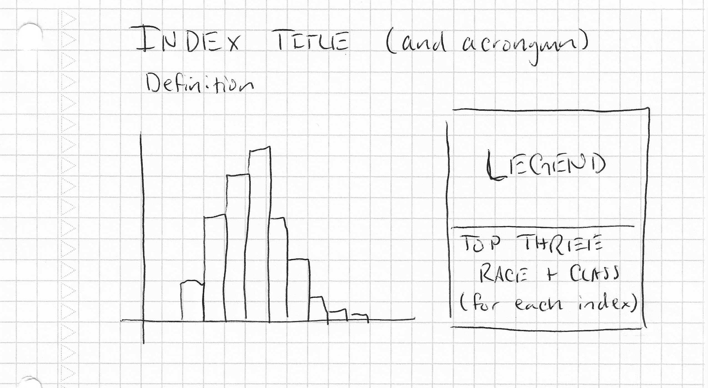

Author: Tiffanie Johnson
Course: SP26‑IN‑NEWM‑N328‑23489
FINAL PROJECT
Applied Dungeonomics is a data‑driven analysis of Dungeons & Dragons 5e character data that treats adventuring not as heroic fantasy, but as a series of statistically questionable decisions.
The project applies statistical normalization and index construction to model survivability, decision‑making, and narrative disruption. Each index is grounded in raw character attributes and standardized against absolute theoretical maxima.
Humor is used as framing, not as a substitute for rigor. The presentation may be playful, but the methodology is sincere, transparent, and reproducible.
An interactive exploration of scenario‑based indexes showing how different race and class combinations tend to survive, panic, negotiate, sneak, or cause problems.
The cleaned CSV used for all calculations, including raw attributes, normalized variables, and alignment mappings. No spell components required.
This project uses raw D&D character statistics (not modifiers) and normalizes them into comparable 0–1 ranges. Indexes are then constructed using weighted combinations of these normalized variables.
| Metric | Maximum Value |
|---|---|
| STR/DEX/CON/INT/WIS/CHA | 30 |
| HP | 500 |
| AC | 35 |
| Level | 20 |
These values define normalization boundaries only and do not reflect typical gameplay.
In order to model unpredictability and narrative instability, character alignment is converted into a numeric Alignment Chaos Coefficient (ACC). This coefficient represents how likely a character is to act impulsively, escalate situations, or derail carefully laid plans.
Lower ACC values correspond to consistency, restraint, and predictable decision‑making. Higher ACC values increase volatility, risk, and overall meme density.
| Alignment | Abbreviation | Chaos Coefficient (ACC) |
|---|---|---|
| Lawful Good | LG | 0.05 |
| Lawful Neutral | LN | 0.10 |
| Lawful Evil | LE | 0.15 |
| Neutral Good | NG | 0.25 |
| True Neutral | NN | 0.40 |
| Neutral Evil | NE | 0.55 |
| Chaotic Good | CG | 0.70 |
| Chaotic Neutral | CN | 0.85 |
| Chaotic Evil | CE | 1.00 |
The ACC is incorporated into multiple indexes either as a
direct risk amplifier (ACC) or, in situations where
restraint is beneficial, as an inverse modifier (1 − ACC).
The Tavern Brawl Survival Index (TBSI) estimates how likely a character is to remain standing during a sudden, chaotic physical altercation in an uncontrolled environment (e.g., a tavern).
This index emphasizes raw physical durability and endurance, with a smaller contribution from charisma (instigation) and alignment‑based chaos.
Formula:
30·STRn + 30·CONn + 20·HPn + 10·CHAn + 10·ACC
The Dragon Encounter Panic Index (DEPI) measures a character’s ability to correctly assess danger and act strategically during a dragon encounter. Higher scores indicate stronger survival instincts.
Wisdom and intelligence dominate this index, supported by dexterity, experience level, and emotional restraint (inversely related to chaos).
Formula:
30·WISn + 25·INTn + 20·DEXn + 15·LVLn + 10·(1 − ACC)
The Dungeon Trap Survival Rating (DTSR) evaluates how effectively a character can detect, avoid, and survive traps in dungeon environments.
This index prioritizes perception and dexterity, with secondary contributions from intelligence, armor, and overall durability.
Formula:
35·WISn + 25·DEXn + 20·INTn + 10·ACn + 10·HPn
The Royal Audience Disaster Index (RADI) estimates how likely a character (or party spokesperson) is to successfully navigate high‑stakes political encounters without triggering punishment or execution.
Charisma and wisdom are key, moderated by intelligence, experience, and emotional restraint.
Formula:
35·CHAn + 25·WISn + 20·INTn + 10·LVLn + 10·(1 − ACC)
The Stealth Mission Failure Index (SMFI) measures how effectively a character can participate in a coordinated stealth operation without compromising the group’s concealment.
This index emphasizes dexterity and situational awareness, moderated by armor, experience, and emotional restraint. Higher scores indicate a greater ability to remain undetected.
Formula:
40·DEXn + 20·WISn + 15·(1 − ACC) + 15·ACn + 10·LVLn
The Party Liability Index (PLI) measures how likely a character is to create complications, conflicts, or unintended consequences for their party.
This index emphasizes charisma, chaos, poor judgment, and brute force.
Formula:
35·CHAn + 25·ACC + 20·(1 − WISn) + 20·STRn
The DM Blood Pressure Index (DBPI) estimates the degree of stress a character induces at the game table through unpredictability, rule bending, and narrative gravity.
This index combines alignment‑based chaos, charisma, experience, and questionable judgment.
Formula:
30·ACC + 25·CHAn + 20·LVLn + 15·(1 − WISn) + 10·INTn
The Applied Dungeonomics visualization was developed through a series of deliberate design iterations. Each iteration responded to conceptual, analytical, or usability challenges identified during development, resulting in a visualization that balances statistical rigor with narrative clarity and audience‑specific framing.
The initial concept focused on visualizing how characters distribute across each custom index. Many layout, hierarchy, and visual encoding options were considered, ultimately landing on a histogram as the initial sketch shows below.
Histograms were selected for their effectiveness in communicating frequency distributions for continuous data and enabling comparison across constructed indexes. This decision prioritized interpretability and analytical clarity over visual novelty.

The first implemented iteration established a functional baseline. Each index was visualized using a histogram displaying the number of characters falling within predefined score ranges.
Score ranges were intentionally uneven. Anticipating a bell‑curve‑like distribution, extreme values were grouped into broader bins, while mid‑range values were allocated narrower ranges. This minimized visual distortion from sparsely populated extremes while preserving meaningful variation within the most common scores.
This iteration also introduced identification of the top three race and class combinations appearing within each score range, allowing users to associate numeric distributions with concrete character archetypes.
After achieving functional correctness, the second iteration focused on aligning presentation with the Dungeons & Dragons domain. Formal, abstract descriptions were replaced with themed and humorous language more appropriate for a D&D‑literate audience.
Each index was reframed using a familiar gameplay scenario, while score ranges were given narrative labels that conveyed meaning without requiring detailed statistical interpretation. This reframing improved accessibility while preserving analytical intent.
Further evaluation revealed that some score ranges lacked sufficient data to meaningfully identify dominant race‑class combinations. Rather than omitting these cases or presenting misleading summaries, they were explicitly marked with themed explanatory notes.
Additionally, missing race or class values within the dataset were identified. Instead of displaying null values, these entries were replaced with themed “unknown” labels tailored to each index’s narrative context. This ensured transparency while maintaining visual and tonal consistency.
To avoid overloading the interface with explanatory text, the fourth iteration introduced a tooltip. This tooltip appears when hovering over missing or ambiguous data labels. It provides a short, humorous explanation indicating that data was unavailable or undefined, with wording customized to match the theme of each index. This approach preserved interface cleanliness while supporting deeper interpretation.
The final iteration focused on aesthetic refinement and overall layout cohesion. Bin colors were kept black to maximize contrast and readability, while accent colors were selected per index to enhance differentiation without overwhelming the visualization.
The page layout was redesigned to resemble a Dungeons & Dragons character sheet or campaign notebook. A parchment‑styled background reinforces the thematic framing, while introductory text and instructions are presented in the voice of a slightly unhinged Dungeon Master, setting tone and guiding user interaction.
A brief overview of Applied Dungeonomics, including methodology, index construction, and interpretive intent.
Kaggle. (n.d.). D&D character database. https://www.kaggle.com/datasets/mexwell/dnd-character-database
Wizards of the Coast. (2014). Player’s Handbook (5th ed.).
Wizards of the Coast. (2014). Dungeon Master’s Guide (5th ed.).